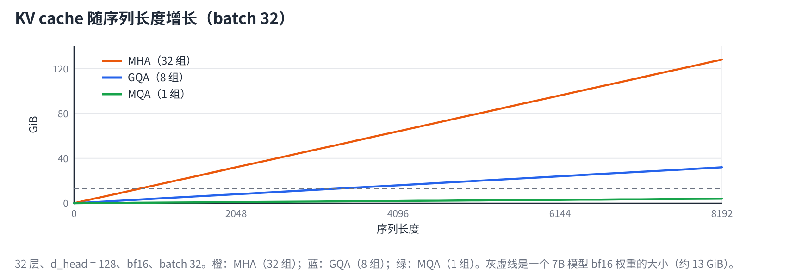
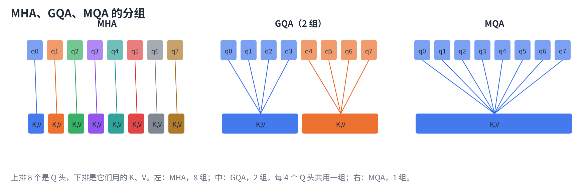
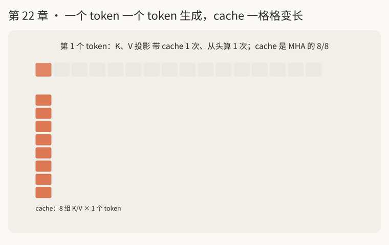

第 22 章 · KV cache 与 MQA / GQA：生成时为什么要存 K、V，怎么让它变小
本地运行
git clone https://github.com/wikieden/beyond-transformer
cd beyond-transformer/code/notebooks
pip install jupyterlab torch numpy
jupyter lab ch22_kv_cache_gqa.ipynb也可以下载后直接用 VS Code 打开 .ipynb 运行。需要 GPU 的章节在 Colab 里选「代码执行程序 → 更改运行时类型 → GPU」。
本章回答：模型一个词一个词地生成，每多一个词，前面所有词的 K、V 都要重新算一遍吗？KV cache 存的是什么、为什么结果完全不变？它有多大，为什么长文本、大 batch 时显存全被它吃掉？MQA 让所有头共用一组 K、V，GQA 折中成几组，cache 能小多少、代价是什么？已经训好的 MHA 模型怎么改成 GQA？
讲解日期：2026-11-26 · 上一章：第 21 章 LLaMA 配方 · 下一章：第 23 章 滑动窗口
对应原文：MQAllm-full-stack/materials/text/papers/mqa-1911.02150.txt摘要 L18–L22、引言 L30–L35（逐个生成的速度受限于“反复从显存读 K、V”的带宽）；GQAllm-full-stack/materials/text/papers/gqa-2305.13245.txt摘要 L20–L35（GQA 是 MHA 和 MQA 之间的插值；用 5% 的预训练算力 uptrain）、§2.1 Uptraining L36–L58（把各头的 K、V 投影取平均）；LLaMA 3transformer-deep-dive/materials/text/papers/llama3-herd-2407.21783.txtL314（GQA，8 组 K、V）
本章缩写：KV cache = Key-Value cache（键值缓存）；MHA = Multi-Head Attention（多头注意力：每个头一组 K、V）；MQA = Multi-Query Attention（多查询注意力：所有头共用一组 K、V）；GQA = Grouped-Query Attention（分组查询注意力：几个头共用一组）；H、H_kv = Q 头数、K/V 组数；d_head = 每头维数；prefill（预填充：一次处理整段提示）；decode（解码：之后每步生成一个 token）；uptraining（在已训好的模型上改结构后少量继续训练）；GiB = 2³⁰ 字节。全部缩写见 附录 · 缩写与术语表
讲解
第一步：KV cache：前面算过的 K、V 存起来（2026-11-26）
类比：写作文时的草稿本。 每写一个新字，都要回头看前面写过的所有字（注意力）。前面每个字的“要点”（K、V）一旦写下就不会变（因果 mask：前面的词看不到后面），所以记在草稿本上，下次直接翻，不用重新读一遍原文再总结。
生成第 t 个 token 时，它的 q 要和前面 t 个位置的 k 做点积、对 v 加权。因果 mask 保证位置 j < t 的 k_j、v_j 不受后面 token 影响，算一次就永远不变。KV cache 就是把每层每个位置的 k、v 存下来，每步只为新 token 算一次 k、v，追加进去。
数字演示（4 个头、d = 8，逐步生成 6 个 token）：
| 做法 | 6 步的 K、V 投影次数 | 输出 |
|---|---|---|
| 每步从头算 | 1 + 2 + … + 6 = 21 | — |
| 带 KV cache | 6 | 和从头算完全一样（差 0） |
生成 1000 个 token：从头算要 500,500 次，带 cache 只要 1000 次。代价是显存：cache 随生成长度一直涨。
一句话：因果 mask 下前面位置的 K、V 不会变，KV cache 把它们存起来，每步只算新 token 的 K、V，结果不变、计算量从 O(n²) 降到 O(n)。
第二步：cache 有多大（2026-11-26）
2 是 K 和 V 两份，L 是层数，n 是 token 数。
数字演示（32 层、32 个 Q 头、d_head = 128、bf16，读到 4096 个 token）：
| 结构 | K、V 组数 | 一条序列 | batch 32 |
|---|---|---|---|
| MHA | 32 | 2.000 GiB | 64.0 GiB |
| GQA | 8 | 0.500 GiB | 16.0 GiB |
| MQA | 1 | 0.062 GiB | 2.0 GiB |
一个 7B 模型的 bf16 权重约 13 GiB；MHA 下 batch 32、4096 长度的 cache 就要 64 GiB，是权重的 5 倍。MQA 论文（L30–L35）指出的瓶颈是：decode 时每生成一个 token 都要把整个 cache 从显存读一遍，速度受限于显存带宽，而不是算力（《数学与实验统计》第 47 章的 roofline）。cache 越小，读得越快、能放下的 batch 越大。

图 22-1 · 32 层、d_head = 128、bf16，batch 32 时 KV cache 随序列长度的增长。橙：MHA（32 组）；蓝：GQA（8 组）；绿：MQA（1 组）。灰虚线是一个 7B 模型 bf16 权重的大小一句话：KV cache = 2·L·H_kv·d_head·n·字节·batch，长序列、大 batch 时远超模型权重；decode 每步都要读一遍，速度受带宽限制。
第三步：MQA 和 GQA：几个 Q 头共用一组 K、V（2026-11-26）
MQA（Shazeer 2019）：所有 Q 头共用一组 K、V。cache 缩小 H 倍，但质量会掉一些。
GQA（Ainslie 等 2023，摘要 L20–L35）：把 H 个 Q 头分成 H_kv 组，每组共用一组 K、V。H_kv = H 就是 MHA，H_kv = 1 就是 MQA，中间是插值。
| H = 4 | Q 头用哪组 K、V | cache 是 MHA 的 |
|---|---|---|
| H_kv = 4（MHA） | [0, 1, 2, 3] | 1 |
| H_kv = 2（GQA） | [0, 0, 1, 1] | 1/2 |
| H_kv = 1（MQA） | [0, 0, 0, 0] | 1/4 |
论文的结论：GQA 的质量接近 MHA，速度接近 MQA。LLaMA 3（L314）、Qwen3、Mistral 都用 8 组 K、V，不管多少个 Q 头。参数量也少了：K、V 投影从 d × d 变成 d × (H_kv·d_head)。
把训好的 MHA 改成 GQA（§2.1，L36–L58）：组内各头的 K、V 投影矩阵取平均当初始化，再用原预训练约 5% 的算力继续训练（uptraining），比从头训一个 GQA 模型便宜得多。

图 22-2 · 8 个 Q 头（上）和它们用的 K、V（下）。左：MHA，8 组；中：GQA，2 组，每 4 个 Q 头共用一组；右：MQA，1 组场景代码：PyTorch 里的 GQA（真实写法；本书 chapter-code 只用 NumPy，这段没跑过）：
q = self.q_proj(x).view(B, T, H, Dh)
k = self.k_proj(x).view(B, T, H_kv, Dh) # 只有 H_kv 组
v = self.v_proj(x).view(B, T, H_kv, Dh)
if kv_cache is not None:
k, v = kv_cache.update(k, v) # 追加新 token 的 K、V，返回全部
k = k.repeat_interleave(H // H_kv, dim=2) # 每组复制给 H/H_kv 个 Q 头（只在计算时展开，不存）
v = v.repeat_interleave(H // H_kv, dim=2)
y = F.scaled_dot_product_attention(q.transpose(1, 2), k.transpose(1, 2), v.transpose(1, 2), is_causal=kv_cache is None)
在 a1 模型上加 GQA、写 KV cache 解码并实测 cache 大小，是里程碑 T-M5。
一句话：GQA 让每 H/H_kv 个 Q 头共用一组 K、V，cache 缩小 H/H_kv 倍、质量接近 MHA；已有 MHA 模型可以组内取平均再 uptrain 5% 改过来。
动画演示：一个 token 一个 token 生成，cache 一格格变长

可交互版：animations/22-kv-cache-gqa.html（滑块：生成到第几个 token；下拉：MHA / GQA / MQA）。
怎么看：
- 上面一排是已经生成的 token，新 token 的 q（亮）去看所有旧的 k（第一步）；
- 下面是 cache：每个 token 一列，每组 K、V 一行；切到 GQA、MQA，行数变少（第三步）；
- 右上角是“从头算”和“带 cache”累计的投影次数，以及 cache 的字节数。
练习与作答记录
题 1（第一步）：生成 200 个 token，每步从头算 K、V，一共要做多少次投影？带 cache 呢？
题 2（第二步）：40 层、Q 头 40 个、K/V 组 8 个、d_head = 128、bf16，一条 32,768 个 token 的序列，KV cache 多少 GiB？
题 3（第三步）：H = 32、H_kv = 8。第 13 号 Q 头用第几组 K、V？K、V 投影的参数比 MHA 少了多少？
口诀
写过的字记草稿本：因果下前面的 K、V 不变，存起来每步只算新的；结果一样，n 方变 n。
cache 是二乘层乘组乘头维乘长度乘字节，长了、批大了比权重还大；解码每步读一遍，卡的是带宽。
所有头共用一组是 MQA，几个头一组是 GQA；组内取平均，再训百分之五就改过来。
本章复习卡片
必背：B54–B55（B54 KV cache 存什么、为什么不变、多大；B55 MQA / GQA 的分组、缩小倍数和 uptraining）。练习做完后，按答错、卡住的地方再补。
附录 · 延伸阅读
留给以后深入学习用，不影响本章主线。★ 是建议先读的。
推荐阅读
| 读什么 | 读哪里 | 读它为了什么 |
|---|---|---|
| ★ Fast Transformer Decoding: One Write-Head is All You Need（MQA，Shazeer 2019） | 摘要 L18–L22；引言 L30–L35；性能分析一节 | decode 受带宽限制、MQA |
| ★ GQA（Ainslie 等 2023） | 摘要 L20–L35；§2.1 L36–L58 | 分组、uptraining |
| 《数学与实验统计》第 47 章 推理成本、第 48 章 高效注意力 | KV cache、roofline；MQA / GQA / MLA | cache 和带宽的数学账 |
| 《PyTorch 从里到外》相关章节 | 推理与缓存 | 框架里的实现 |
| 第 25 章 MLA | 全部 | 另一种压 cache 的办法 |
数学原理
- 因果下 K、V 不变：k_j = W_K x_j^{(l)}，x_j^{(l)} 只依赖位置 ≤ j 的输入，后面的 token 不改变它。
- 计算量：不带 cache 的 n 步生成，K、V 投影共 n(n+1)/2 次；带 cache n 次。注意力本身每步仍要看全部 t 个位置，总共 O(n²)。
- 算术强度：decode 时每读一个 K、V 数只做约 2 次运算，远低于 GPU 的“算力 / 带宽”比，受带宽限制。
- GQA 的插值：H_kv 从 H 到 1，cache 和 K、V 参数按 H_kv/H 线性缩小。
公式清单
| 公式 | 意思 |
|---|---|
| \(2\cdot L\cdot H_{kv}\cdot d_{head}\cdot n\cdot \text{bytes}\cdot B\) | KV cache 字节数 |
| 第 h 个 Q 头用第 \(\lfloor h/(H/H_{kv})\rfloor\) 组 | GQA 的分组 |
| \(W_K^{\text{GQA}, g} = \frac{1}{H/H_{kv}}\sum_{h\in g}W_K^{h}\) | uptraining 的初始化 |
代码对照：把本章的数字用代码算一遍
NumPy。代码在仓库本地
beyond-transformer/solutions/chapter-code/ch22_kv_cache_gqa.py，配套测试tests/test_ch22.py，notebook 在notebooks/ch22_kv_cache_gqa.ipynb：
bash cd beyond-transformer/solutions/chapter-code uv run python ch22_kv_cache_gqa.py uv run pytest tests/test_ch22.py
讲义 ↔ 代码：
| 讲义 | 公式 | 写法 | 跑出来 |
|---|---|---|---|
| 第一步 cache vs 从头算 | 投影次数 | generate(x, use_cache=...) |
6 vs 21，输出一样 |
| 第二步 cache 大小 | 2·L·H_kv·d·n·字节 | cache_bytes(...) |
2.000 / 0.500 / 0.062 GiB |
| 第三步 GQA | 分组、取平均 | attend_last、mean_pool_heads |
(8, 8) → (8, 4) |
关键几行：
Kc.append((x[t] @ Wk).reshape(n_kv, DH)) # 每步只算新 token 的 K，追加进 cache
k, v = K[:, h // g], V[:, h // g] # 第 h 个 Q 头用第 h // g 组
return 2 * layers * n_kv * d_head * n_tokens * bytes_per * batch
代码里才看得到的 2 件事：
- cache 存的是投影之后的 K、V：不是隐状态 x；存 x 每步还得重算投影，存 K、V 才真正省计算（第 25 章的 MLA 反过来存一个压缩向量，用吸收的技巧避免展开）。
- RoPE 要在存进 cache 之前转好：k 按它自己的位置转完再存；新 token 的位置等于当前 cache 长度。这里的玩具没有位置编码，看不到这一点。
自己改一改（不影响练习答案）：
- 把
cache_bytes的每数字节改成 1（fp8 cache），MHA batch 32 的 cache 变成多少？ - 把
mean_pool_heads改成“只取组里第一个头”而不是平均，你觉得 uptrain 起来会更好还是更差？（GQA 论文的消融里有答案）